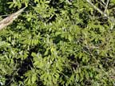
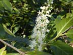
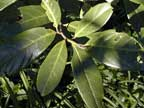
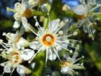
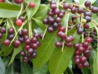

Laurel
Prunus laurocerasus
Other names
cherry laurel
Description
Straggly bush / small tree with glossy evergreen leaves 15 20cm long. Flowers white and fragrant in a spike. Red dark purple berries.
Similar plants
Bare bushes look similar to rhododendrons, but the flowers are distinctive. True laurel (Laurus nobilis) or bay tree is quite different and not poisonous. Apples, pears, plums, almonds, etc are also related, but poisoning usually only occurs when the pips or stones are eaten in large quantities, which is very rarely. There are a number of related toxic species of Prunus in the USA, some of which may be seen in parks and gardens here.
Distribution
Gardens (especially hedges) and as an escape all over NZ.
Toxin
Hydrogen cyanide from the glycosides prunasin and sambunigrin (from 5% in young leaves to 1% in older leaves) plus enzymes to release HCN. Also an irritant oil (0.05%). HCN blocks oxygen transport to tissues. The young leaves and the stones in the fruit are the most toxic parts.
Species affected
All animals are potential victims, but cattle and horses account for most clinical cases. Not palatable, so is poisoning rare. One kg of leaves (up to 2g HCN) may be sufficient to kill a 500 kg cattle beast. Ruminants are more susceptible than monogastrics as hydrolysis of glycosides can take place in the rumen.
Clinical signs acute
Sudden death depending on amount ingested. Lesser amounts cause dyspnoea, dilated pupils, muscular tremors, abdominal distension, collapse and convulsions. Frequently the animal goes down, struggles, and dies.
Clinical signs chronic
Post mortem signs
In animals which have died immediately after eating laurel no obvious signs. In animals which have taken longer to die bright red blood, cyanosis of the organs and tissues, congestion of the lungs and almond (cyanide) smell.
Diagnosis
Evidence of plant ingestion and cyanide.
Differential diagnosis
Treatment
Fast intervention with IV sodium thiosulphate (combines with cyanide to form thiocyanate) followed by sodium nitrite (induces formation of methaemoglobin which combines with cyanide). Decontamination where feasible.
Prognosis
Prevention
References
Conner H.E. The Poisonous Plants In New Zealand. 1992. GP Publications Ltd, Wellington
Parton K, Bruere A.N. and Chambers J.P. Veterinary Clinical Toxicology, 2nd ed. 2001. Veterinary Continuing Education Publication No. 208
Robb, W and Campbell, D. Poisoning of sheep by the consumptionof laurel leaves. Veterinary Record, 1941, 53, 93 95
|  bush |
 |
|
|
 |
 |
|
|
 |
||
|
|
|
|